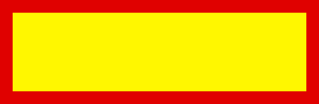
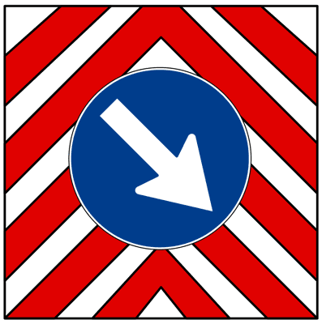

دليل وقاموس الباب 17: الأوتوستراد، تنظيم الحمولة، وسحب المقطورات
أحد أضخم أبواب بنك الأسئلة الوزاري (332 سؤالاً): تفصيل شروط دخول الأوتوستراد والسرعة الدنيا (80 كم/س)، قاعدة الحارتين للأطوال فوق 7 أمتار، ضوابط حارة الطوارئ ومحطات الاستراحة، القواعد الدقيقة للبروز (اللوحة العاكسة وفخ اللوحتين)، وفيزياء سحب المقطورات وتوزيع الأوزان على المحور لتفادي الانقلاب والانحراف.
🛣️ المحور الأول: القواعد التشغيلية للأوتوستراد والمحظورات الصارمة Circolazione in Autostrada
- المشاة والحيوانات (ممنوعون في كل مسارات الأوتوستراد، ويُسمح بهم فقط في ساحات الخدمة ومواقف الاستراحة Aree di servizio بشرط حراسة الحيوانات).
- الدراجات الهوائية (Velocipedi / Biciclette) والسكوتر الخفيف (Ciclomotori).
- الدراجات النارية:
- ذات المحرك الحراري بسعة أقل من 150 سم³ (125cc ممنوعة قطيعاً!).
- الكهربائية بقوة أقل من 11 kW.
- الدراجات النارية ذات المقعد الجانبي (Sidecar) بسعة أقل من 250 سم³.
- المركبات التي لا تستطيع بلوغ سرعة 80 كم/س على الطرق المنبسطة.
- الآلات الزراعية (Macchine agricole) والآلات الإنشائية.
- المركبات غير المزودة بإطارات مطاطية، أو التي تحمل حمولات غير مستقرة أو بارزة تتجاوز الحدود القانونية.
- التزام الحارة اليمنى: يجب السير دائماً في الحارة الحرة بأقصى اليمين؛ والحارات اليسرى مخصصة للتجاوز فقط.
- ⚠️ قاعدة المركبات فوق 7 أمتار (Veicoli oltre 7 metri): على الطرق السريعة المكونة من 3 حارات أو أكثر في نفس الاتجاه، يُحظر على المركبات أو مجموعات المركبات (سيارة تسحب مقطورة / كارافان) التي يتجاوز طولها 7 أمتار، وكذلك الشاحنات بحمولة كاملة تفوق 5 أطنان، استخدام الحارة الثالثة أو الرابعة! ويجب عليها الالتزام بالحارتين الأقرب إلى اليمين فقط.
- بوابات الرسوم (Casello): ممنوع منعاً باتاً الرجوع للخلف (Retromarcia) أو تغيير المسار المفاجئ أو دوران الحذوة (Inversione di marcia).
- الأنوار: تشغيل الضوء المنخفض (Anabbaglianti) إلزامي نهاراً وليلاً لجميع المركبات ذات المحرك على الأوتوستراد.
- حالات الوقوف المصرح بها في حارة الطوارئ: فقط في حالتين قسريتين: عطل ميكانيكي بالمركبة (Avaria)، أو وعكة صحية شديدة ومفاجئة للسائق أو أحد الركاب (Malessere fisico).
- ⚠️ فخ مدة التوقف في حارة الطوارئ: الحد الأقصى المسموح به للتوقف الاضطراري في حارة الطوارئ هو 3 ساعات فقط (massimo 3 ore)! (وليس 6 أو 24 ساعة كما يظن البعض).
- مدة التوقف في ساحات ومحطات الخدمة (Aree di servizio e sosta): مسموح بالتوقف حتى 24 ساعة كحد أقصى.
- الاستثناء الوحيد للسير في حارة الطوارئ: في حال وجود زحام شديد (Ingorgo)، يُسمح فقط للسائقين المتجهين إلى مخرج الأوتوستراد (Svincolo) باستخدام حارة الطوارئ ابتداءً من مسافة 500 متر قبل المخرج فقط!
📦 المحور الثاني: ترتيب الحمولة وقواعد البروز وألواح الإشارة المعتمدة Sistemazione del Carico & Sporgenza
| اتجاه البروز | الحد القانوني المسموح | شروط السلامة واللوحات التحذيرية | الفخ الوزاري المتكرر |
|---|---|---|---|
| البروز الأمامي (Anteriore) | 0% (ممنوع طولياً) | لا يجوز لأي حمولة على السيارات أن تبرز للأمام خارج حدود الصدام الأمامي للسيارة. | البروز الأمامي الطولي ممنوع تماماً على سيارات الركوب حتى لو كانت الحمولة خفيفة! |
| البروز الخلفي (Posteriore) | حتى 3/10 من طول المركبة (30%) | مسموح فقط للحمولات غير القابلة للتجزئة (Cose indivisibili)، مع وضع اللوحة المربعة العاكسة ذات الخطوط البيضاء والحمراء. | فخ اللوحتين: إذا كان البروز يغطي عرض مؤخرة السيارة بالكامل، يجب وضع لوحتين عاكستين (واحدة على اليمين وواحدة على اليسار). |
| البروز الجانبي (Laterale) | حتى 30 سم من أضواء الموضعة | يُقاس من أضواء الموضعة الأمامية والخلفية، بشرط عدم تجاوز العرض الأقصى القانوني للمركبات (2.55 متر). | لا يجوز أن يعيق البروز الجانبي رؤية السائق في المرايا الجانبية. |




🚐 المحور الثالث: سحب المركبات وقيادة المقطورات والكارافان — 89 سؤالاً Traino Veicoli, Rimorchi & Caravan
- توزيع الحمولة داخل المقطورة: يجب وضع الأوزان الثقيلة فوق محور المقطورة مباشرة أو قريباً منه قدر الإمكان (vicino al suo asse) وفي الأسفل، لتفادي إجهاد خطاف الجر أو تخفيف ضغط العجلات الخلفية للسيارة.
- مسار الانعطاف في المنحنيات (Traiettoria in curva): تميل عجلات المقطورة الخلفية إلى تضييق زاوية المنعطف نحو الداخل (stringe la traiettoria verso l'interno)؛ لذلك يجب على السائق توسيع قوس الانعطاف لمنع صعود عجلات المقطورة على الرصيف أو الاصطدام بالمارة!
- الرياح الجانبية وقوى الانقلاب: المقطورات المرتفعة كالكارافان تكون شديدة التأثر بقوة الرياح الجانبية (forza ribaltante del vento)، خصوصاً عند الخروج من الأنفاق أو عبور الجسور أو عند تجاوز شاحنات كبرى.
- مسافة الفرملة والمحرك: وجود مقطورة يزيد من مسافة الفرملة (Aumenta lo spazio di frenatura)، ويرفع درجة حرارة سائل تبريد المحرك في المرتفعات القوية.
- كابل الأمان (Cavo di sicurezza): يربط فرامل الطوارئ بالسيارة، بحيث إذا انفصلت المقطورة عن السيارة أثناء السير، يشد الكابل فرامل المقطورة تلقائياً لإيقافها.
- على الطرق العادية: مسموح لسيارة خاصة أن تسحب سيارة معطلة واحدة فقط، بشرط استخدام قضيب صلب (Barra rigida) أو حبل متين (Fune/Cavo) مع تمييزه بوضوح، وتشغيل أضواء الخطر الرباعية (4 frecce) في السيارة المسحوبة أو وضع مثلث الخطر خلفها.
- 🚫 في الأوتوستراد: يمنع منعاً باتاً السحب الخاص بين السيارات في جميع أجزاء الأوتوستراد وروافده؛ ويقتصر السحب حصراً على شاحنات الإنقاذ المرخصة (Soccorso stradale autorizzato).
- ⚠️ فخ السيرفو (Servosterzo e Servofreno): عندما يتم سحب سيارة معطلة ومحركها مطفأ، يتعطل نظام مساعد التوجيه (Servosterzo) ومساعد الفرامل (Servofreno)، مما يجعل المقود ثقيلاً جداً في المناورة ودواسة الفرامل قاسية تتطلب جهداً عضلياً مضاعفاً!
📖 القاموس التقني المبوب ثنائي اللغة (A2) Glossario Ufficiale
| المصطلح بالإيطالية | الترجمة بالعربية | ملاحظات وفخاخ الامتحان | استماع |
|---|---|---|---|
| Autostrada | طريق سريع (أوتوستراد) | خالٍ من التقاطعات السطحية، والحد الأدنى للسرعة 80 كم/س للمركبات. | |
| Corsia di emergenza | حارة الطوارئ | لأعطال المركبة والوعكات الصحية، وبحد أقصى 3 ساعات فقط. | |
| Pannello carichi sporgenti | لوحة البروز الخلفي المربعة | مربعة بخطوط مائلة بيضاء وحمراء، عاكسة للضوء. | |
| Cose indivisibili | أشياء غير قابلة للتجزئة | الشرط الحصري للسماح بالبروز الخلفي حتى 3/10 من طول السيارة. | |
| Gancio di traino | خطاف السحب والجر | يجب ألا يحمل وزناً عمودياً زائداً بسبب سوء توزيع حمولة المقطورة. | |
| Cavo di sicurezza | كابل أمان المقطورة | يفعل فرامل الطوارئ تلقائياً في حال انفصال المقطورة أثناء السير. | |
| Stringe la traiettoria | تضيّق مسار الانعطاف للداخل | خاصية حركة عجلات المقطورة في المنعطفات وتتطلب توسيع القوس. | |
| Forza ribaltante del vento | قوة الرياح المسببة للانقلاب | تزداد خطورتها على الكارافان والمقطورات الخفيفة عند الجسور والأنفاق. | |
| Svincolo autostradale | مخرج / تقاطع الأوتوستراد | يسمح باستخدام حارة الطوارئ في الزحام ابتداءً من 500 متر قبله فقط. | |
| Merci pericolose | المواد والبضائع الخطرة | تميز بلوحة برتقالية مستطيلة عاكسة للضوء. |
🎯 جدول الفخاخ الوزارية المقارنة (Vero / Falso) Trappole dei Quiz
"La sosta di emergenza sulla corsia di emergenza in autostrada non può superare il tempo massimo di 24 ore."
التعليل الصحيح: خطأ؛ التوقف في حارة الطوارئ لا يجوز أن يتجاوز 3 ساعات فقط (3 ore)؛ أما 24 ساعة فهي الحد الأقصى للتوقف في محطات وساحات الخدمة (Aree di servizio).
"Sulle autostrade a tre o più corsie, i complessi di veicoli di lunghezza superiore a 7 metri possono percorrere qualunque corsia."
التعليل الصحيح: خطأ؛ إذا تجاوز طول مجموعة المركبات 7 أمتار، يحظر عليها استخدام الحارة الثالثة أو الرابعة، ويجب الالتزام بالحارتين الأقرب لليمين فقط.
"In caso di foratura di un pneumatico, è consentito trainare il veicolo guasto con un altro veicolo privato in autostrada."
التعليل الصحيح: خطأ؛ السحب الخاص بين السيارات في الأوتوستراد ممنوع منعاً باتاً؛ ويقتصر حصرياً على شاحنات الإنقاذ المرخصة.
"Se il carico sporge longitudinalmente per l'intera larghezza della parte posteriore del veicolo, si devono applicare due pannelli retroriflettenti."
التعليل الصحيح: صحيح؛ إذا كانت الحمولة تبرز بعرض مؤخرة السيارة بالكامل، يلزم قانوناً وضع لوحتين عاكستين على الطرفين.